November 2026 · Screenshots are from version 0.2.5 and show demo data.
Part A · Salk stations
Part A is for the scanning stations at Salk, which upload to Bloom. Labs elsewhere: read Part A for how the app works, then Part B for what's different without Bloom.
1 · Getting around
Home
Home is the first page you see. It shows the daily steps, the setup pages, and today's scans.
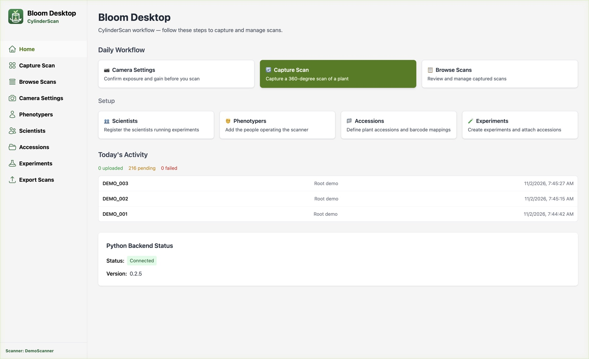
Home, with the sidebar on the left.
Sidebar: use it to move between pages. The scanner's name is shown at the bottom.
Daily Workflow: Camera Settings, Capture Scan and Browse Scans, the pages you use every day.
Setup: Scientists, Phenotypers, Accessions and Experiments, which you fill in before scanning.
Today's Activity: how many images are uploaded, waiting or failed, and the latest scans. If any uploads failed, a red banner links to Browse Scans.
2 · Before your first scan
Set up once, then scan
Before the first scan of a new experiment, set things up in this order. Each step needs the one before it.
Phenotyper: you, the person operating the scanner.
Accessions: an Excel file that matches each plant's barcode to its accession.
Experiment: links the species, scientist and accession file.
Camera Settings: check the picture looks right.
Capture Scan: scan your plants.
GOOD TO KNOW
If someone has already set up your experiment, you only need to add yourself as a phenotyper and go straight to Capture Scan.
The scanner itself (its name, camera and Bloom account) is set up by the Bloom team, so you don't need to change it.
3 · Setup
Scientists and Phenotypers
Both pages work the same way: a list of people already added, and a short form to add someone new.
Open Scientists (or Phenotypers) in the sidebar.
Under Add New Scientist, enter a Name and Email.
Click Add new scientist (or Add new phenotyper). They appear in the list above.
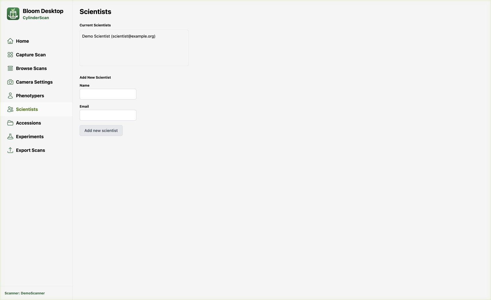
Scientists
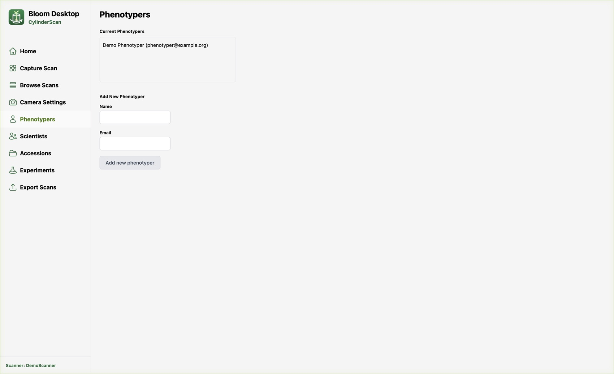
Phenotypers
GOOD TO KNOW
Each email can only be used once. People can't be edited or removed here, so check the spelling before adding. If something needs fixing, contact the Bloom team.
4 · Setup
Accessions
An accession file tells Bloom Desktop which accession each plant belongs to. When you scan a barcode, the accession fills in for you.
Prepare the Excel file
The first row holds the column names, such as Plant barcode and Accession.
Each row after that is one plant: its barcode and its accession.
Use an .xlsx or .xls file, up to 15 MB. The accession file takes the Excel file's name.
Upload it
Under Upload Plant Mappings (Excel), drag in your file or click Choose File.
Choose which column holds the barcode (Select Plant ID (Barcode) Column) and which holds the accession (Select Accession Column).
Check the preview, then click Upload Accession File. You'll see Done uploading!
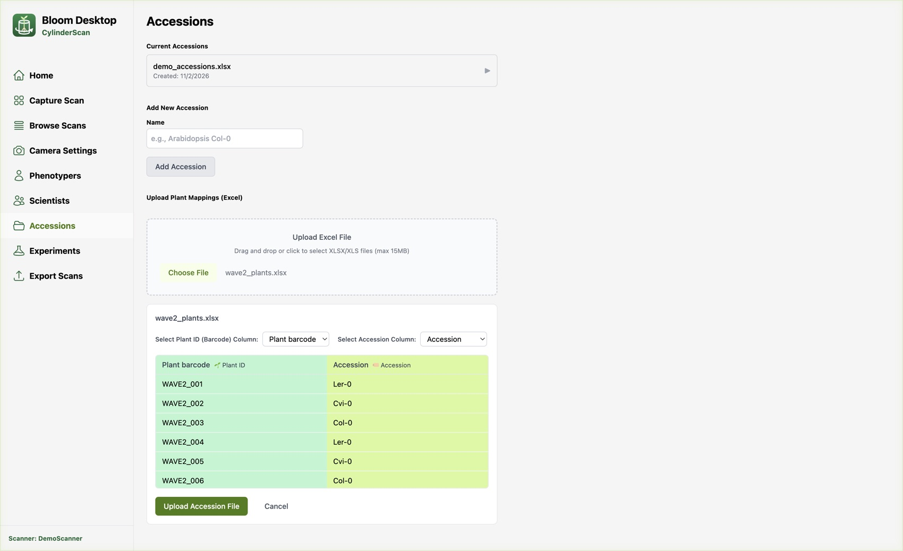
Choosing the barcode and accession columns, with a preview of the rows.
Check an accession file
Click a file under Current Accessions to open it. You'll see the experiments that use it, and every barcode with its accession. Use Edit to correct a row, or Delete to remove the file.
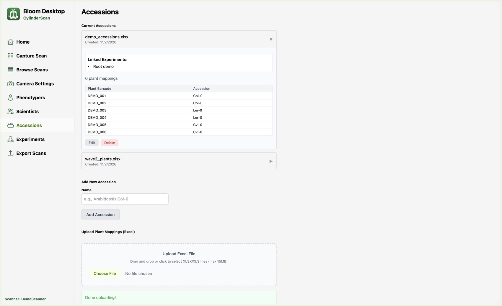
An accession file opened, showing its linked experiment and plants.
5 · Setup
Experiments
An experiment groups your scans. It links a species, a scientist and an accession file.
Create an experiment
Under Create New Experiment, enter a Name.
Choose the Species, Scientist and Accession File. All four are required.
Click Create. The experiment appears in the list at the top.
NEW SPECIES?
The species list comes from Bloom. If your species isn't there, choose Need a new species? Add it in Bloom… at the bottom of the list, add it in Bloom, then click Refresh list.
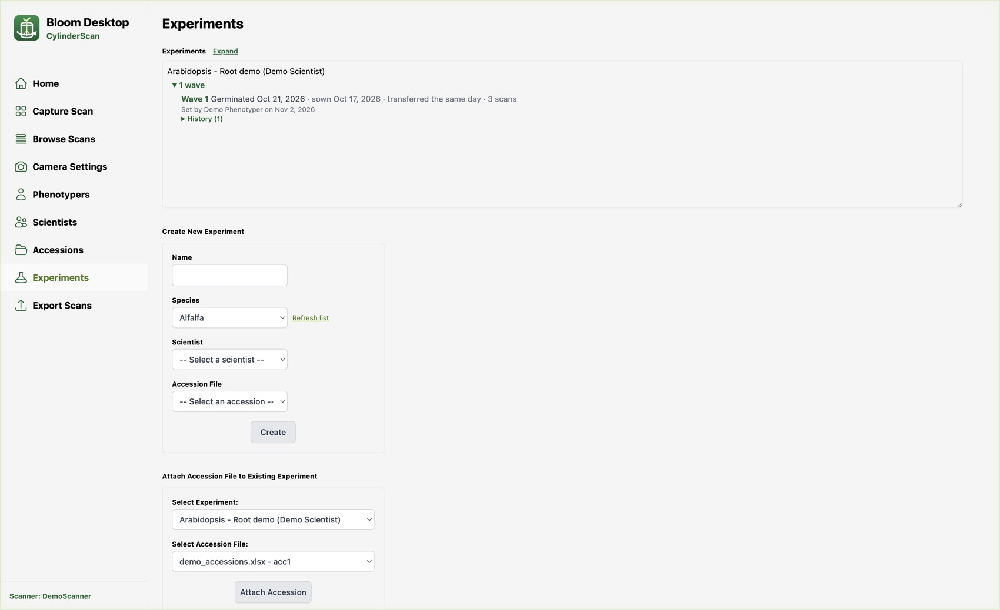
Each experiment shows its waves and their dates. Click a wave to see when the dates were set and by whom.
Experiment without an accession file?
Under Attach Accession File to Existing Experiment, select the experiment and the accession file, then click Attach Accession. You can't scan for an experiment until it has an accession file.
6 · Daily
Camera Settings
Check the picture before you start scanning. Settings are kept after the app restarts.
PLEASE DON'T CHANGE THE SETTINGS
A change stays for everyone who scans on that station afterwards, and every experiment should use the same settings. If the picture doesn't look right, contact the Bloom team.
Adjust Exposure Time, Gain and Gamma with the sliders or by typing a number.
Click Apply Settings. The Live Preview shows the result.
When you're happy, the line under the buttons reads Applied to the camera, and saved for future sessions.
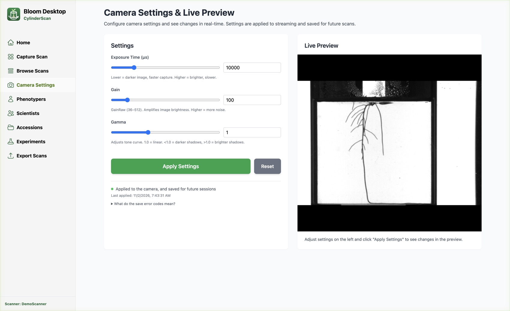
Camera Settings with the live preview.
Exposure Time: higher makes the image brighter.
Gain: also brightens, but adds noise. Prefer exposure first.
Gamma: 1.0 is normal. Above 1.0 brightens the shadows.
Reset goes back to the default values.
7 · Daily
Capture Scan
This is where you scan each plant. Fields marked * are required.
1. Choose who and what
Choose your Phenotyper name and the Experiment, then type the Wave Number.
2. Set the wave's dates (first time only)
For a new wave, a Set wave dates card appears. Choose how the dates are entered:
Wave-level: all plants share the same dates. Enter them once.
Plant-level: each plant has its own dates. You enter them when each barcode is first scanned.
Enter the Sowing date and Germination date. Transfer to cylinder is ticked as Same as germination date; untick it to enter a different date. Then click Save dates.
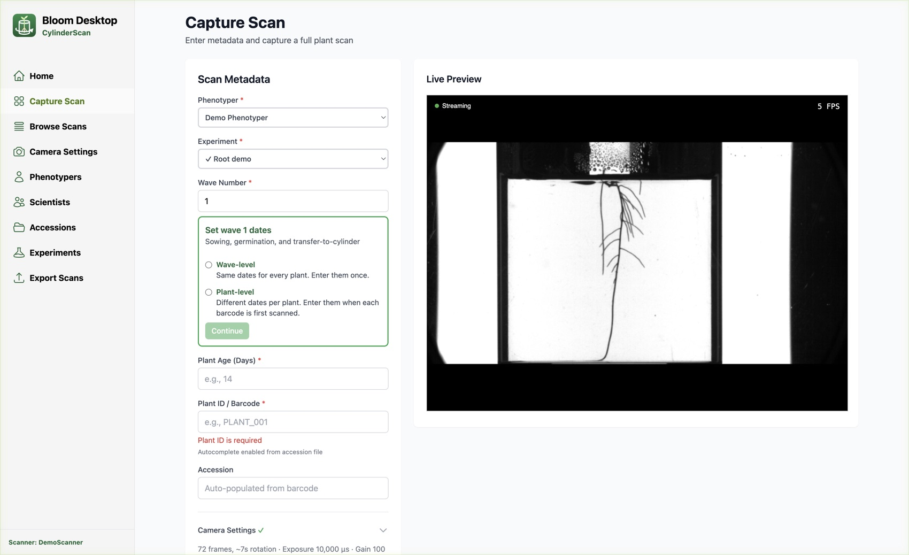
A new wave asks for its dates.
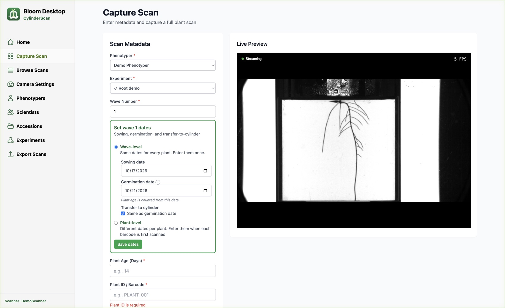
Wave-level, with the dates entered.
HOW PLANT AGE IS WORKED OUT
Plant age = days from the germination date to the day you scan. The germination date is day 0. You don't type it, and you can't change it.
So the age goes up by one every day. The same plant scanned on different days gets a different age:
Germination date
Scanned on
Plant age
Oct 20
Oct 20
0
Oct 20
Oct 30
10
Oct 20
Oct 31
11
Need a set age? Scan on that day. For a 10-day-old plant germinated on Oct 20, scan on Oct 30. Scanning the next day makes it 11.
Scanning one wave over several days? Its plants will have different ages. That's expected, and each scan's age is right for the day it was taken.
After midnight counts as the next day.
Wrong age? Check the germination date. Age is only as right as the dates you saved.
3. Scan the barcode
Scan or type the Plant ID / Barcode. Plant Age and Accession fill in automatically. Check the Camera Settings summary, then click Start Scan.
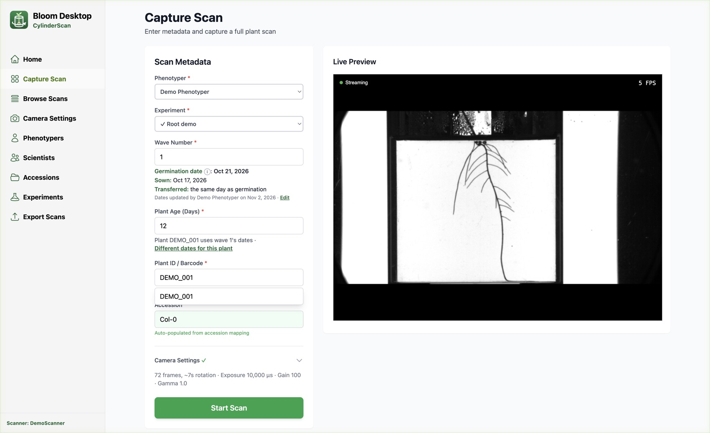
Everything filled in and ready to scan.
START SCAN STAYS GREY?
Barcode not found in accession file: the barcode isn't in this experiment's accession file. Check the barcode, or the experiment.
Accession file required: the experiment has no accession file. See Experiments.
A scan already exists for this plant, experiment, wave, and age: this plant has already been scanned today.
Save wave dates above to start the scan: the wave's dates haven't been saved yet.
4. During the scan
The turntable turns the plant a full circle. The right side shows each picture as it's recorded, with Frame N of 72, the time elapsed and the time left.
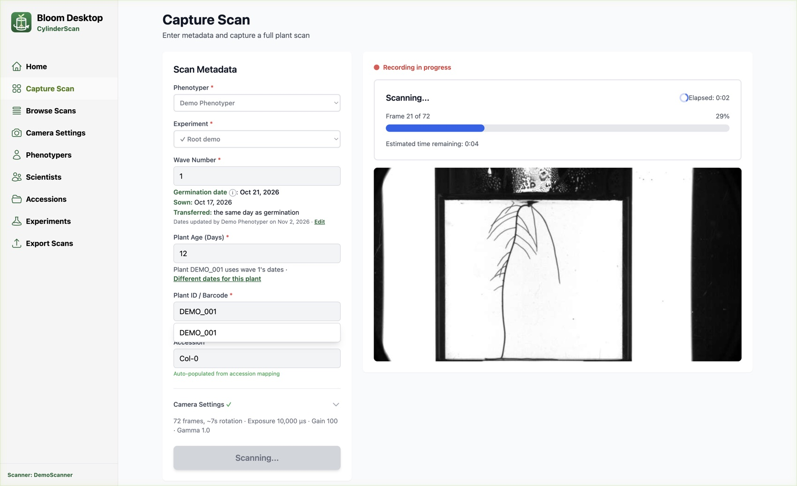
Recording in progress.
After the last frame, the page shows Saving... while the images are saved. Leave the plant in place and stay on the page until this finishes.
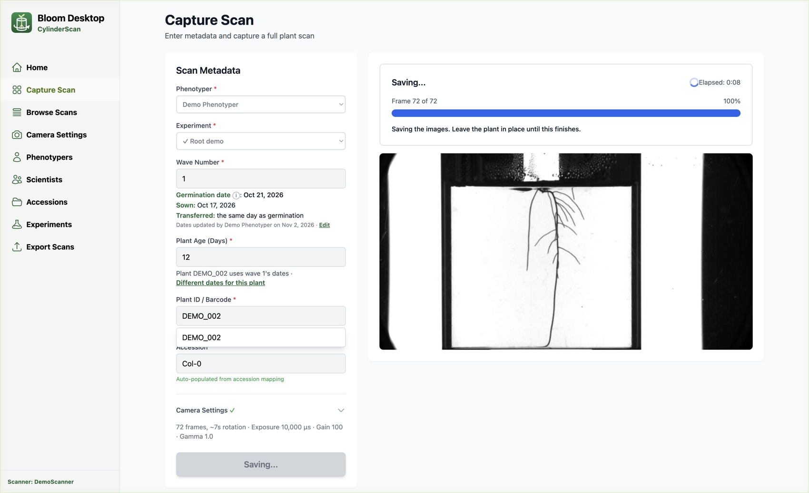
Saving the images.
5. Done
When you see Scan completed successfully!, take the plant out and scan the next barcode. Phenotyper, experiment and wave stay filled in.
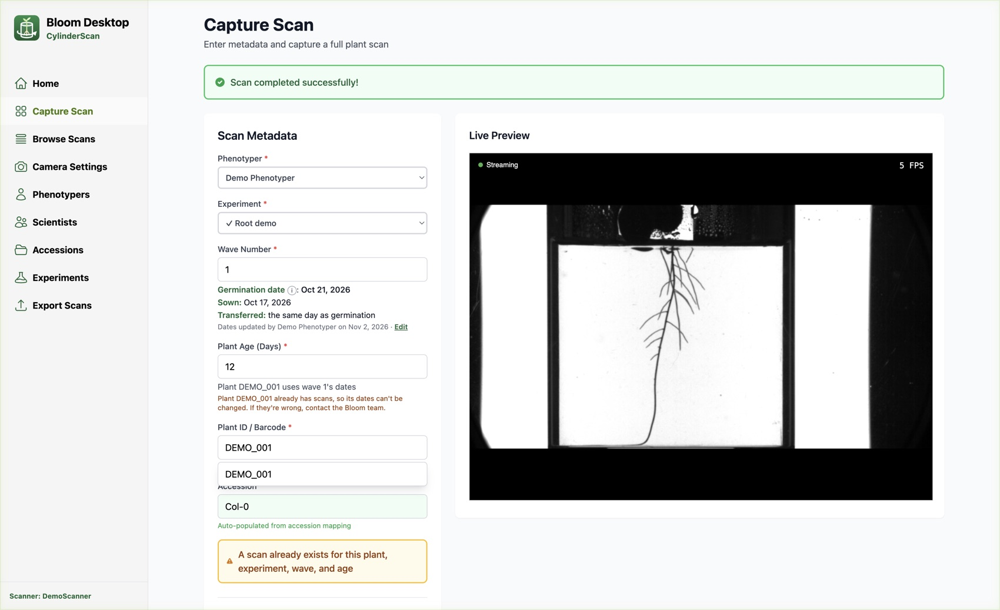
The scan is saved. The scan you just did shows under Today's Activity on Home.
IF A SCAN FAILS
A red message explains what went wrong and stays until you click Dismiss. A failed scan isn't saved, so scan that plant again. Before you do, check the turntable is back at its start position.
GOOD TO KNOW
While a scan runs, you can't leave the page, and the app asks before closing.
After 10 minutes with nothing happening, the form clears for the next person. Just fill it in again.
8 · Daily
Browse Scans
All your scans, newest first. This is where you upload them to Bloom.
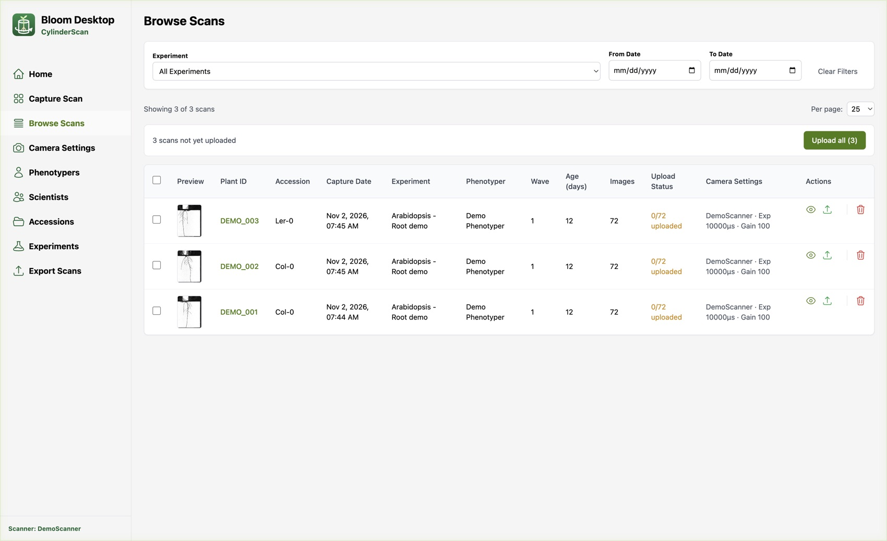
Browse Scans, with Upload all at the top right.
Filter by experiment or by date. Clear Filters shows everything again.
Upload all uploads every scan not yet uploaded. You can Stop it at any time.
Or tick some scans and click Upload Selected.
Upload Status shows All uploaded, how many images are uploaded, or how many failed. Failed uploads can be uploaded again.
The icons on the right view, upload or delete a scan.
DELETING
Deleting a scan can't be undone, and a deleted scan is never uploaded. Images already uploaded to Bloom stay in Bloom.
View a scan
Click a Plant ID to open the scan. Step through the frames with Previous and Next (or the arrow keys), and zoom with + and −. The right side shows the plant, experiment, capture and camera details. You can also Upload or Delete from here.
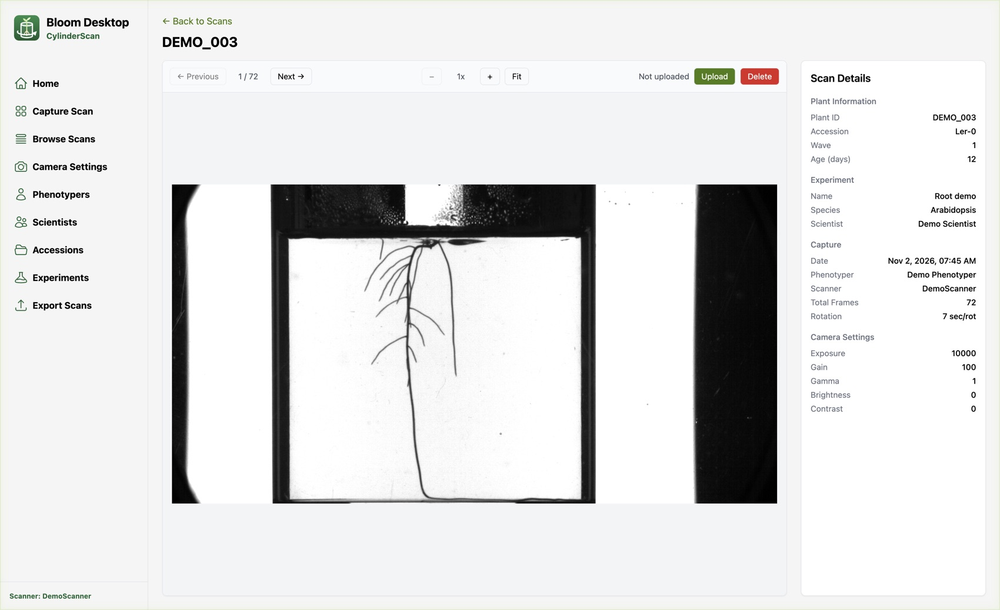
A single scan, frame 1 of 72.
9 · Daily
Before you upload: check every scan
Each scan's details (experiment, wave, plant ID, accession, plant age and phenotyper) go into the Bloom database with its pictures. Correcting them after upload is hard, and the Bloom team has to do it.
Check each scan. In Browse Scans, click a scan's Plant ID to see its details next to its pictures.
Wrong scan? Delete it before uploading, in Browse Scans or on the scan's page, then scan the plant again. A deleted scan is never uploaded.
Wrong wave dates? Delete the scans taken with them (for a Plant-level wave, that plant's scans), and Edit opens the dates again. Fix them, then scan again.
Upload only what you've checked.Upload all sends every scan not yet uploaded, so check the list first.
ALREADY UPLOADED A MISTAKE?
Deleting it in Bloom Desktop doesn't remove it from Bloom. Contact the Bloom team.
10 · As needed
Export Scans
Copy scans to a USB drive or another folder.
Click Choose Destination and pick the drive or folder.
Tick the scans you want. Scans are grouped by experiment and day; tick a group to select all its scans.
Click Export. Don't unplug the drive until it finishes.
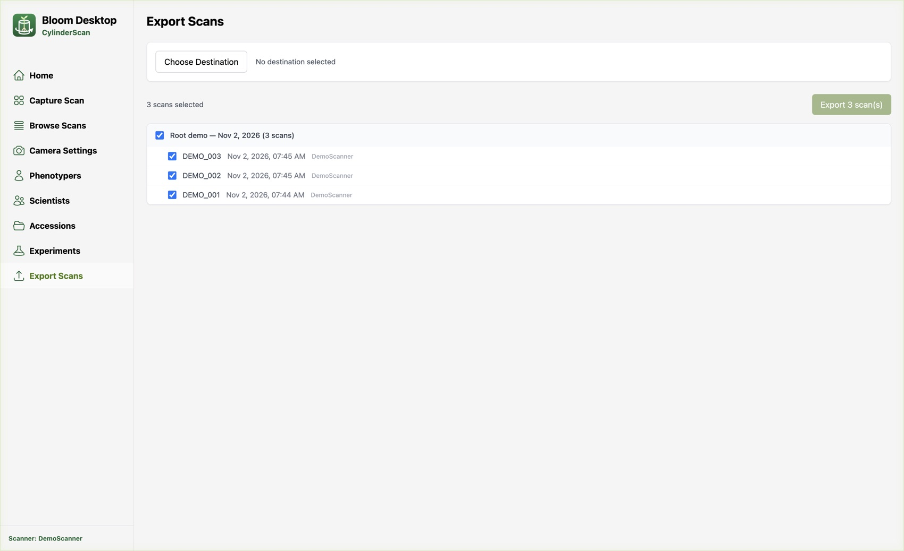
Three scans selected for export.
Scans already on the destination are skipped, so exporting again only adds what's new.
11 · Questions
Reach out to the Bloom team:
🌿 Benfica Fernando 🍃 Elizabeth Berrigan 🌱 Nolan Hartwick
Part B · Using Bloom Desktop outside Salk
Bloom Desktop also runs on its own, without a Bloom account. Scans stay on your computer, and you copy them with Export Scans.
12 · Outside Salk
Install
Download the latest release from github.com/Salk-Harnessing-Plants-Initiative/bloom-desktop/releases. For CylinderScan on Windows, run Bloom-Desktop-<version>-Setup.exe.
Install the hardware drivers: the Basler pylon camera software and the NI-DAQmx runtime for the turntable.
Start Bloom Desktop. On the first start it opens Machine Configuration.
VERSION
Running without Bloom needs a release newer than 0.2.5.
GOOD TO KNOW
The hardware Bloom Desktop drives (camera, turntable motor and NI-DAQ) is listed under Hardware in the project's README on GitHub.
GraviScan can also run without Bloom, on Linux. This guide covers CylinderScan.
13 · Outside Salk
Set up without Bloom
Machine Configuration holds the computer's settings. It opens on the first start; later, open it with Ctrl+Shift+, (Cmd+Shift+, on a Mac).
Under Scanner Mode, choose CylinderScan.
Under Bloom Connection, untick Connect to Bloom. The Bloom login fields disappear.
Under Station Identity, type a Scanner Name for this computer, using letters, numbers, - and _ (for example lab-scanner-1). Every scan is labelled with it.
Under Scans Directory, click Browse... and pick the folder where scans are saved.
Under Hardware, click Detect Cameras, or type the camera's Camera IP Address.
Check Scan Parameters (frames per turn and seconds per rotation), then click Save Configuration.
Restart Bloom Desktop when the notice asks you to.
GOOD TO KNOW
Choose the scanner name carefully: it's saved with every scan, so changing it later splits your scans between two names.
14 · Outside Salk
What's different without Bloom
Scanning works the same as in Part A. These parts change.
Species
The species list is kept on your computer. On Experiments, choose Add a species… at the bottom of the Species list, type the name and click Add. To take one out, choose it and click Remove from list. Experiments that already use a species keep it.
No uploads
There is nothing to upload, so the upload buttons and Upload all are hidden, and section 9 (Before you upload) doesn't apply. Each scan's 72 images stay in your scans folder.
Keeping your scans safe
Use Export Scans (section 10) to copy scans to a USB drive or a shared folder. Nothing is backed up for you, so copy your scans regularly.
"Contact the Bloom team"
Notes in Part A that say this are for Salk stations. Outside Salk, whoever looks after your scanning computer makes those changes.
GOOD TO KNOW
To start uploading to Bloom later, tick Connect to Bloom again, enter the Bloom login, save, and pick this scanner's name from Bloom's list. Scans taken without Bloom keep the name you typed.
15 · Questions
Open an issue at github.com/Salk-Harnessing-Plants-Initiative/bloom-desktop/issues.